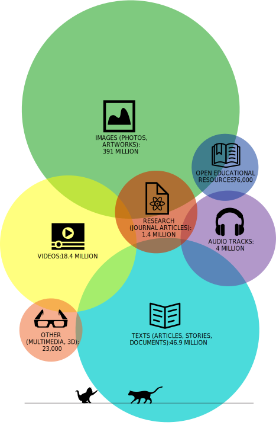

Creative Commons helps to build a more creative, free, and open commons. Please make your donation now to help us meet our year-end goal before our December 31 deadline.

| Content type | Number of works |
|---|---|
| Images (photos, artworks) | 391 million |
| Open Educational Resources | 76,000 |
| Research (journal articles) | 1.4 million |
| Audio tracks | 4 million |
| Videos | 18.4 million |
| Texts (articles, stories, documents) | 46.9 million |
| Other (multimedia, 3D) | 23,000 |
Note: Data only reflects media on 16 platforms + Directory of Open Access Journals, just a slice of all available CC media on the web. Dig into our data sources.